Your first groove with RHYTHMER OS.
RHYTHMER OS 0.2.0 · 4 bars · 140 BPM · C minor. Build a drum, bass and chord pattern, then save it. Acid and Break are optional additions at the end. No downloaded break recording is required for the main exercise.
Watch the musical example, then follow the illustrated steps for the current controls.
Before you start
- Install the full SD ZIP, including
Rhythmer/Plugins, not only UPDATE. - Connect headphones or speakers and start at a low output level.
- Disconnect external MIDI clock for this exercise so you can set tempo locally.
- Push = press the large encoder. Turn = rotate it. B1–B3 are the buttons above the screen; K1–K3 are the knobs below it.
- Back/cancel is SHIFT + encoder push. SHIFT + encoder turn is fine adjustment, not Back.
| Track | Instrument | Preset | Pattern length |
|---|---|---|---|
| 1 | Rhythmer Kit | DRUM-X | 4 bars |
| 2 | FMini-1 | MOOG BASS | 4 bars |
| 3 | FM-106 | A11 Brass | 4 bars |
| 4, optional | Acid Engine | SQUELCH | Set before generation |
| 5, optional | Break Engine | Your own two-bar loop | Its prepared loop pattern may be 2 bars |
1. Create an empty project
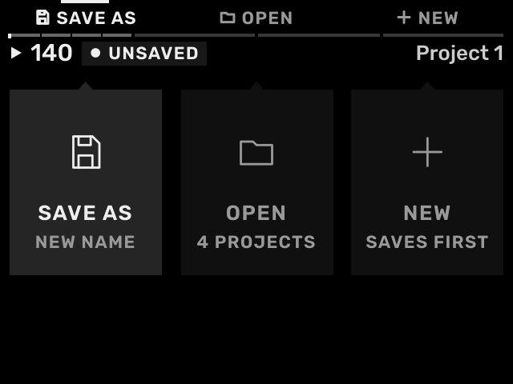
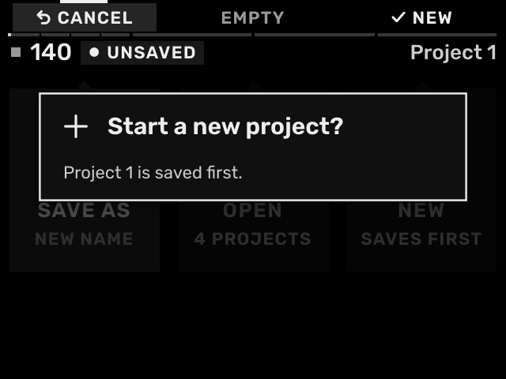
- Press SHIFT + Pad 16 to open Project.
- Press B3 NEW. On its confirmation, press B2 EMPTY.
- Select track 1: hold PAD BANK, tap pad 1, then release PAD BANK.
- Press SAMPLE. You should have an empty sample-kit track.
Check: there are no notes or samples you need to keep in this new project. Choosing NEW is not a way to add an instrument to an existing project.
2. Load the drum kit on track 1
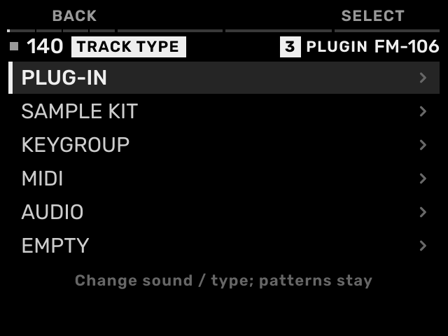
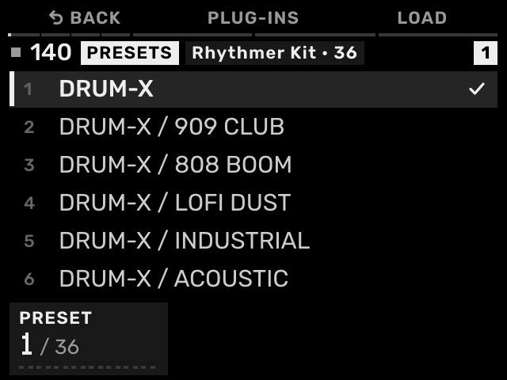
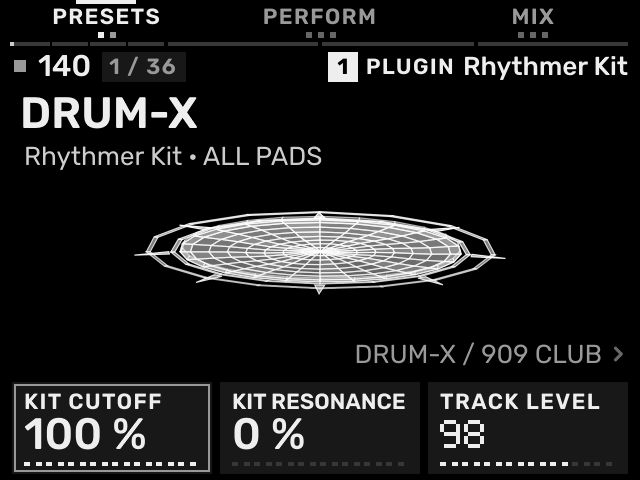
- Press PAD FX + KNOB FX together to open TRACKS.
- Press B1 TRACK SETUP, select TRACK TYPE, then PLUG-IN.
- Choose Rhythmer Kit from the top of the plug-in list and push to load it.
- Press SAMPLE, then B1 until PRESETS is selected.
- Push to open the preset list, choose DRUM-X, then push / B3 LOAD.
- Return to SAMPLE and use bank A. If necessary, tap PAD BANK until bank A is selected.
- Play pad 1 = kick, pad 2 = snare, pad 4 = closed hat.
Check: each of those pads plays a different drum. If the list is empty, check the full installation and Rhythmer/Plugins before continuing. If every pad changes the pitch of one sound, check that the loaded engine is Rhythmer Kit rather than an individual drum sound.
3. Set tempo and the drum pattern length
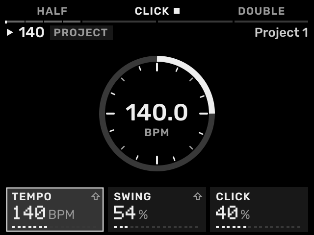
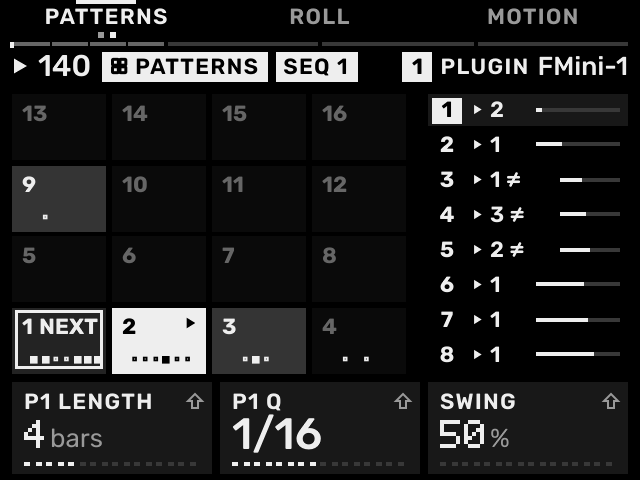
- Hold TAP TEMPO and turn the encoder to 140 BPM, then release it.
- Press SEQ. If an editor opens, press B1 for SEQUENCES; press B1 again for PATTERNS.
- Select bank A, pad 1 for pattern 1.
- On the pattern settings row, set K1 LENGTH = 4 bars, K2 Q = 1/16, K3 SWING = 50%.
- Press SAMPLE before playing notes.
Check: the header still identifies track 1. The pads now play drums. On PATTERNS they select patterns instead. Pattern length belongs to this track; you will set it separately for tracks 2 and 3.
4. Record drums
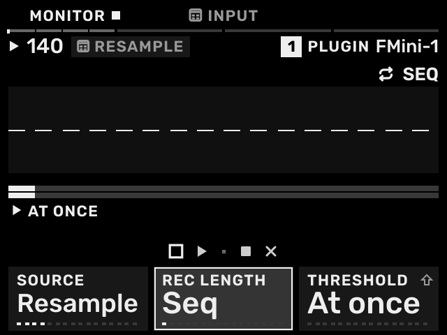
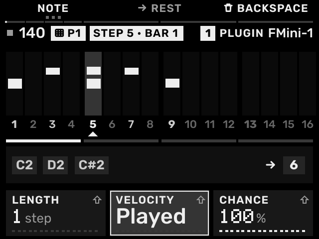
- Enable a count-in if useful: SHIFT + Pad 4 toggles it.
- Press SEQ RECORD, then PLAY. Wait for the count-in if enabled.
- Count 1, 2, 3, 4 in each bar. Tap kick pad 1 on beats 1 and 3 for four bars.
- Let the pattern loop. Add snare pad 2 on beats 2 and 4.
- Let it loop again. Add closed hat pad 4 on the counts 1-and-2-and-3-and-4-and.
- Press SEQ RECORD again to leave recording while playback continues. Press STOP when you want to stop.
Check: after recording is off, the drums repeat without you pressing pads. If pads switch patterns instead of making drum sounds, stop, press SAMPLE and start again. SHIFT + − undoes a supported recording edit. For precise corrections use SHIFT + SEQ for Step Edit; this exercise does not require it.
5. Load and record a bass on track 2
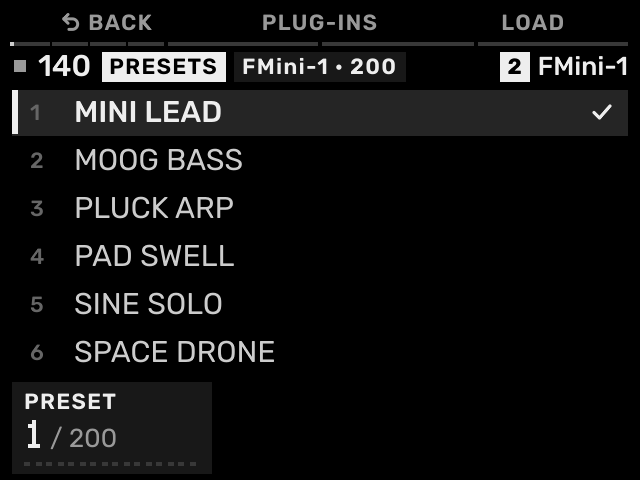
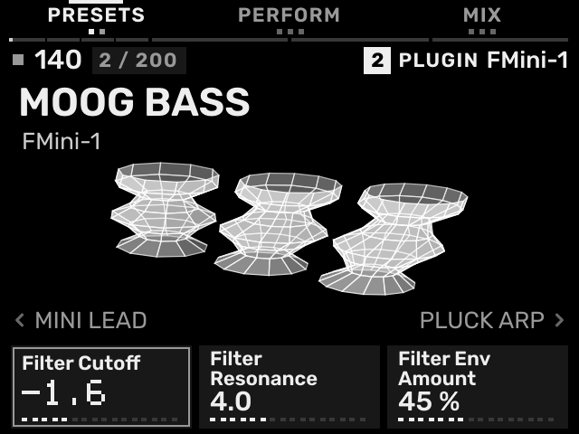
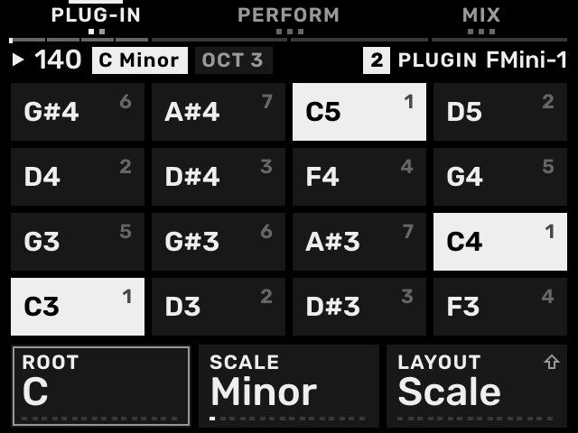
- Hold PAD BANK, tap pad 2, release PAD BANK. Check track 2 in the header.
- The empty-track type cards appear. Choose Plugin, then FMini-1. If another screen remains open, press SAMPLE first.
- On PRESETS, push for the list. Select MOOG BASS, then push / LOAD.
- Hold SAMPLE for Keys. Set K1 ROOT = C, K2 SCALE = Minor, K3 LAYOUT = Scale, then release SAMPLE.
- Press SEQ → B1 until PATTERNS, choose pattern 1, and set 4 bars / 1/16 / 50% as on track 1.
- Press SAMPLE. Try pads 1, 3 and 5. Use −/+ to move the playable octave if needed.
- Press SEQ RECORD → PLAY and record a short phrase with those pads. Leave space between notes. Press SEQ RECORD again to stop recording.
Check: drums still play from track 1; pads now play bass on track 2. A pad changes the bass note, not its preset. Selecting a track alone does not make PATTERNS pads become musical notes: SAMPLE does.
6. Add chords on track 3
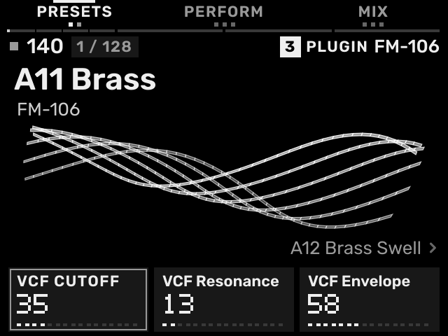
- Select track 3 with PAD BANK + pad 3.
- Choose Plugin → FM-106. Open its preset list and load A11 Brass.
- In Keys, confirm C / Minor / Scale. In PATTERNS, set pattern 1 to 4 bars / 1/16 / 50%.
- Press SAMPLE. Play pads 1, 3 and 5 together for a minor chord.
- Record short chord hits with SEQ RECORD → PLAY. Release the pads between hits. Turn recording off afterwards.
Check: the displayed preset name is A11 Brass. Release each chord before the next hit.
Optional: generate the chord part instead of recording it
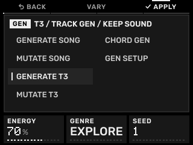
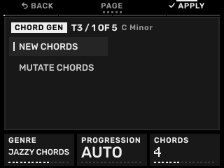
- Keep FM-106 on track 3, then open SEQ → B1 PATTERNS → SHIFT + B3 GEN.
- Select CHORD GEN and push the encoder. This is a separate entry from GENERATE T3 / MUTATE T3.
- Page 1: choose JAZZY CHORDS or NEO SOUL, PROGRESSION AUTO, CHORDS 4.
- Press B2 PAGE. Page 2: BARS 4 / PATTERN 0% / CHORD COLOR 7THS. After the first comparison, try 9THS or ADVANCED.
- Page 3: ENERGY 65% / PLAY STYLE BLOCK / GATE 80%. Page 4: VOICING AUTO / REGISTER OCT 4. PLAY RATE has no job in BLOCK.
- Page 5: leave KEY SOURCE PROJECT. The key/scale cards should show this guide's C / Minor. Do not change the project tempo or scale for this exercise.
- Select NEW CHORDS and push / APPLY. It replaces only track 3's current pattern; track 1 drums and track 2 bass stay. Use SHIFT + − to restore the recorded version if preferred.
- Press PLAY to hear it with drums and bass. For another harmonic progression, use NEW CHORDS again. MUTATE CHORDS keeps the progression and varies articulation.
- To compare playing styles, set PLAY STYLE ARP UP and PLAY RATE 1/8, then MUTATE CHORDS. Compare STRUM / NATURAL the same way. Notes will be successive on a mono engine; FM-106 can play chord stacks.
- B1 BACK or SHIFT + encoder click returns to GEN; another Back returns to PATTERNS.
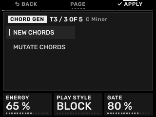
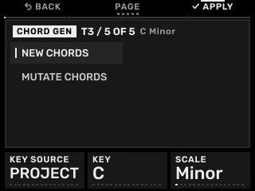
Which command should I use? GENERATE T3 / MUTATE T3 keep the original engine-adapted track generator, with genre, energy and seed. CHORD GEN gives explicit control over progression, chord changes, phrase length and playing style. Using CHORD GEN never changes the meaning of GENERATE T3. GENERATE SONG can replace the whole selected four-track group and change global tempo/key/scale; do not use it for this single chord-part exercise.
Generate drums instead: select track 1 with Rhythmer Kit → open GEN → choose the genre and GENERATE T1. Existing sounds stay loaded. A genre without a drum vocabulary, such as Neo Classic, shows no drum part and keeps the existing pattern.
7. Balance the tracks
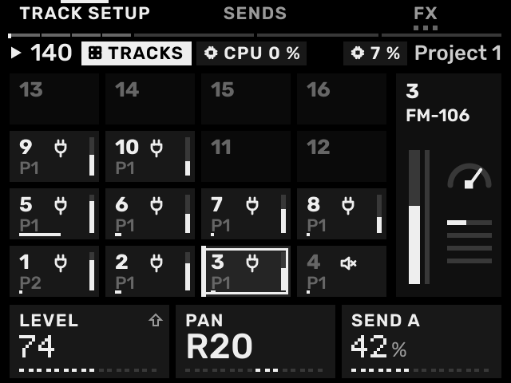
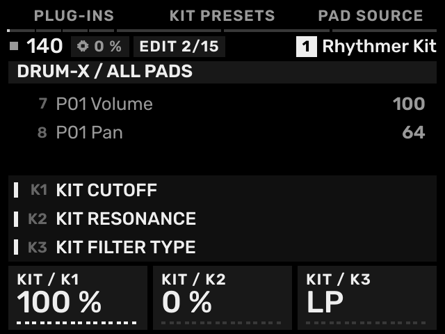
- Press PAD FX + KNOB FX together for TRACKS.
- Select track 1, 2 or 3 using the encoder or PAD BANK + its pad.
- Use K1 LEVEL to balance it, K2 PAN for left/right position and K3 SEND A only if you intend to use bus A.
- To adjust the whole drum kit's filter: select track 1 → SAMPLE → B1 PRESETS → KIT CUTOFF / KIT RESONANCE.
- To adjust only one drum's volume: track 1 → SAMPLE → B1 EDIT → hit that pad → first row K1 Pxx Volume. Check the P number before turning it.
Check: KIT CUTOFF affects all kit pads; Pxx Volume affects only the selected pad. ECHO/SPACE on PERFORM are separate track effects, not the main engine filter or sends A/B.
8. Save and reopen
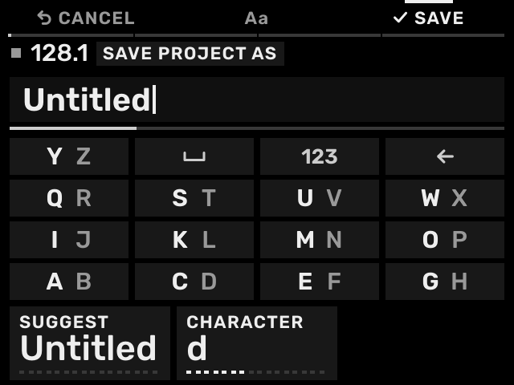
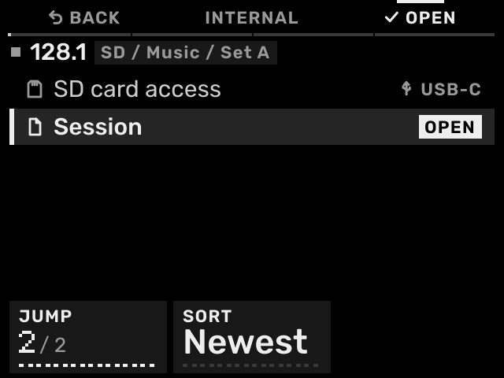
- Press STOP and allow about three seconds without adjusting controls. The project can autosave while idle.
- Press SHIFT + Pad 16 → B1 SAVE AS.
- Enter a name, for example FIRST GROOVE 020, and press B3 SAVE.
- Wait for SAVED. Keep the original samples and plug-in folders on the card.
- To reopen later: Project → B2 OPEN → choose the project → push.
Check: saving a project is different from saving a User Sound/Kit. The project is what preserves the drum, bass and chord patterns together.
Optional: generate an Acid line on track 4

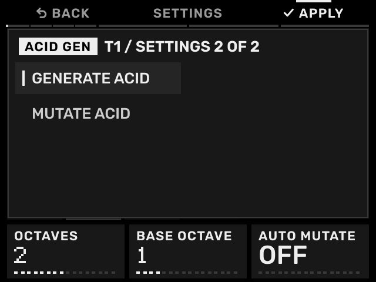
- Select track 4 → Plugin → Acid Engine → preset SQUELCH.
- Select pattern 1 and set the desired pattern length.
- Open SEQ → B1 PATTERNS → SHIFT + B3 GEN.
- Select ACID GEN, not GENERATE SONG.
- Start with DENSITY 70 / ACCENT 40 / SLIDE 25. On settings page 2 keep AUTO MUTATE off for now.
- Choose GENERATE ACID and push / APPLY. Press PLAY to compare it with the other tracks.
- Back returns to GEN; another Back returns to PATTERNS. SHIFT + − undoes a generation operation.
Do not apply GENERATE SONG to tracks 1–4 here. SOUND + MIDI can replace the instruments and patterns you just recorded. ACID GEN and GENERATE T4 work on the selected track instead.
Optional: add your own Break loop on track 5
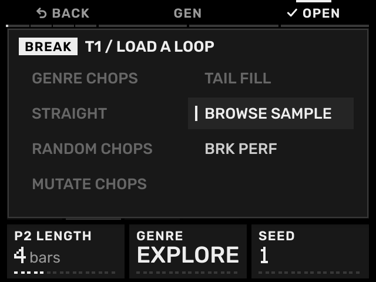
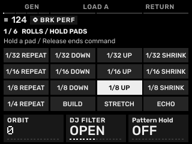
- Put a loop you may use in the card's Samples folder. Start with a known two-bar loop.
- Select track 5 → Plugin → Break Engine.
- In the browser check LOAD A and set K1 LOAD BARS = 2 before selecting the file and pushing.
- Wait for preparation. BREAK GEN stays open; a straight pattern is prepared if the destination pattern was empty.
- Press PLAY. A two-bar Break pattern can repeat while tracks 1–3 play four bars; their lengths do not have to match.
- Choose BRK PERF. The first page, 1 ROLLS / HOLD PADS, plays held effects. Turn the encoder to 2 CHOPS to play individual slices.
- To reopen setup: select track 5 → SEQ → B1 PATTERNS → SHIFT + B3 GEN → BREAK GEN.
If it plays at half/double the intended speed, check the source's bar count. Changing Grain knobs alone does not trigger stretching: hold pad 3 STRETCH on page 1, keep it held and turn to page 5. LOOP VARIATIONS requires LOOP mode, playback and PATTERN HOLD off. See the Break instructions before using those pages.
If you get stuck
| What happened | Do this |
|---|---|
| I cannot find the sound page | Press SAMPLE |
| Pads switch patterns | Release SEQ; press SAMPLE |
| Wrong track is being edited | PAD BANK + target pad; check the header |
| No plug-ins listed | Check the full SD installation and Rhythmer/Plugins |
| B1 is a rate instead of TRACK SETUP | Turn off NOTE REPEAT / ARP, then reopen TRACKS |
| I see Save Slot instead of synth controls | SHIFT + encoder push; return to sound-screen EDIT |
| I lost the Break menu | SEQ → B1 PATTERNS → SHIFT + B3 GEN → BREAK GEN |
| An effect or note will not stop | STOP twice within 400 ms |
The full manual explains instrument replacement, User Sound/Kit saving and the six Break pages. Use the button reference to distinguish selecting a track, opening its instrument and choosing its pattern.